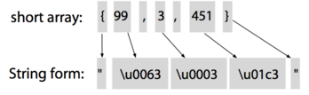

ANTLR 应用实例
Table of Contents
例 1：将数组转化为字符串
例如
static short[] data = {1,2,3};
⇒
static String data = "\u0001\u0002\u0003"; // Java char are unsigned short
首先定义 Array.g4 文件：
/** Grammars always start with a grammar header. This grammar is called
* ArrayInit and must match the filename: ArrayInit.g4
*/
grammar Array;
/** A rule called init that matches comma-separated values between {...}. */
init : '{' value (',' value)* '}' ; // must match at least one value
/** A value can be either a nested array/struct or a simple integer (INT) */
value : init
| INT
;
// parser rules start with lowercase letters, lexer rules with uppercase
INT : [0-9]+ ; // Define token INT as one or more digits
WS : [ \t\r\n]+ -> skip ; // Define whitespace rule, toss it out
我们执行如下的命令：
antlr4 Array.g4
javac *.java
将生成的 Parser 集成到 Java 程序中：
// import ANTLR's runtime libraries
import org.antlr.v4.runtime.*;
import org.antlr.v4.runtime.tree.*;
public class Test {
public static void main(String[] args) throws Exception {
// create a CharStream that reads from standard input
ANTLRInputStream input = new ANTLRInputStream(System.in);
// create a lexer that feeds off of input CharStream
ArrayInitLexer lexer = new ArrayInitLexer(input);
// create a buffer of tokens pulled from the lexer
CommonTokenStream tokens = new CommonTokenStream(lexer);
// create a parser that feeds off the tokens buffer
ArrayInitParser parser = new ArrayInitParser(tokens);
ParseTree tree = parser.init(); // begin parsing at init rule
System.out.println(tree.toStringTree(parser)); // print LISP-style tree
}
}
我们执行如下的命令：
javac ArrayInit*.java Test.java
java Test
{1,{2,3},4}
EOF
就会输出：
(init { (value 1) , (value (init { (value 2) , (value 3) })) , (value 4) })
实现需求
规则简单
- { 转化为 "
- } 转化为 "
- 数字转化为 4 位 16 进制字符串

下面实现一个 Listener 来做这件事, ShortToUnicodeString.java：
public class ShortToUnicodeString extends ArrayInitBaseListener {
/** Translate { to " */
@Override
public void enterInit(ArrayInitParser.InitContext ctx) {
System.out.print('"');
}
/** Translate } to " */
@Override
public void exitInit(ArrayInitParser.InitContext ctx) {
System.out.print('"');
}
/** Translate integers to 4-digit hexadecimal strings prefixed with \\u */
@Override
public void enterValue(ArrayInitParser.ValueContext ctx) {
// Assumes no nested array initializers
int value = Integer.valueOf(ctx.INT().getText());
System.out.printf("\\u%04x", value);
}
}
这里的 ctx.INT() 是告诉 context 拿到当前 int 的 value。
下面的是 Translate.java
// import ANTLR's runtime libraries
import org.antlr.v4.runtime.*;
import org.antlr.v4.runtime.tree.*;
public class Translate {
public static void main(String[] args) throws Exception {
// create a CharStream that reads from standard input
ANTLRInputStream input = new ANTLRInputStream(System.in);
// create a lexer that feeds off of input CharStream
ArrayInitLexer lexer = new ArrayInitLexer(input);
// create a buffer of tokens pulled from the lexer
CommonTokenStream tokens = new CommonTokenStream(lexer);
// create a parser that feeds off the tokens buffer
ArrayInitParser parser = new ArrayInitParser(tokens);
ParseTree tree = parser.init(); // begin parsing at init rule
// Create a generic parse tree walker that can trigger callbacks
ParseTreeWalker walker = new ParseTreeWalker();
// Walk the tree created during the parse, trigger callbacks
walker.walk(new ShortToUnicodeString(), tree);
System.out.println(); // print a \n after translation
}
}
现在我们执行：
javac Array*.java Translate.java
java Translate
{99, 3, 451}
Ctrl-d
结果：
"\u0063\u0003\u01c3"
例 2：实现一个计算器
定义 LabeledExpr.g4
grammar Expr;
/** The start rule; begin parsing here. */
prog: stat+ ;
stat: expr NEWLINE
| ID '=' expr NEWLINE
| NEWLINE
;
expr: expr ('*'|'/') expr
| expr ('+'|'-') expr
| INT
| ID
| '(' expr ')'
;
MUL : '*' ; // assigns token name to '*' used above in grammar
DIV : '/' ;
ADD : '+' ;
SUB : '-' ;
ID : [a-zA-Z]+ ; // match identifiers
INT : [0-9]+ ; // match integers
NEWLINE:'\r'? '\n' ; // return newlines to parser (is end-statement signal)
WS : [ \t]+ -> skip ; // toss out whitespace
这里我们会使用 Vistor 模式来实现我们的需求：
下面是 Calc.java:
import org.antlr.v4.runtime.*;
import org.antlr.v4.runtime.tree.ParseTree;
import java.io.FileInputStream;
import java.io.InputStream;
public class Calc {
public static void main(String[] args) throws Exception {
String inputFile = null;
if ( args.length>0 ) inputFile = args[0];
InputStream is = System.in;
if ( inputFile!=null ) is = new FileInputStream(inputFile);
ANTLRInputStream input = new ANTLRInputStream(is);
LabeledExprLexer lexer = new LabeledExprLexer(input);
CommonTokenStream tokens = new CommonTokenStream(lexer);
LabeledExprParser parser = new LabeledExprParser(tokens);
ParseTree tree = parser.prog(); // parse
EvalVisitor eval = new EvalVisitor();
eval.visit(tree);
}
}
首先输入：
antlr4 -no-listener -visitor LabeledExpr.g4
下面我们实现 Evalvisitor.java
import java.util.HashMap;
import java.util.Map;
public class EvalVisitor extends LabeledExprBaseVisitor<Integer> {
/** "memory" for our calculator; variable/value pairs go here */
Map<String, Integer> memory = new HashMap<String, Integer>();
/** ID '=' expr NEWLINE */
@Override
public Integer visitAssign(LabeledExprParser.AssignContext ctx) {
String id = ctx.ID().getText(); // id is left-hand side of '='
int value = visit(ctx.expr()); // compute value of expression on right
memory.put(id, value); // store it in our memory
return value;
}
/** expr NEWLINE */
@Override
public Integer visitPrintExpr(LabeledExprParser.PrintExprContext ctx) {
Integer value = visit(ctx.expr()); // evaluate the expr child
System.out.println(value); // print the result
return 0; // return dummy value
}
/** INT */
@Override
public Integer visitInt(LabeledExprParser.IntContext ctx) {
return Integer.valueOf(ctx.INT().getText());
}
/** ID */
@Override
public Integer visitId(LabeledExprParser.IdContext ctx) {
String id = ctx.ID().getText();
if ( memory.containsKey(id) ) return memory.get(id);
return 0;
}
/** expr op=('*'|'/') expr */
@Override
public Integer visitMulDiv(LabeledExprParser.MulDivContext ctx) {
int left = visit(ctx.expr(0)); // get value of left subexpression
int right = visit(ctx.expr(1)); // get value of right subexpression
if ( ctx.op.getType() == LabeledExprParser.MUL ) return left * right;
return left / right; // must be DIV
}
/** expr op=('+'|'-') expr */
@Override
public Integer visitAddSub(LabeledExprParser.AddSubContext ctx) {
int left = visit(ctx.expr(0)); // get value of left subexpression
int right = visit(ctx.expr(1)); // get value of right subexpression
if ( ctx.op.getType() == LabeledExprParser.ADD ) return left + right;
return left - right; // must be SUB
}
/** '(' expr ')' */
@Override
public Integer visitParens(LabeledExprParser.ParensContext ctx) {
return visit(ctx.expr()); // return child expr's value
}
}
运行： 其中 t.expr:
193
a=5
b=6
a+b*2
(1+2)*3
javac Calc.java LabeledExpr*.java
java Calc t.expr
结果：
193
17
9
我们这里还需要写一个 clear 实现，用于清除 memory。
例 3：实现翻译器
这个例子要求通过类的定义自动生成接口
例如我们有 Demo.java
import java.util.List;
import java.util.Map;
public class Demo {
void f(int x, String y) { }
int[ ] g(/*no args*/) { return null; }
List<Map<String, Integer>>[] h() { return null; }
}
我们要能生成这个
interface IDemo {
void f(int x, String y);
int[ ] g(/*no args*/);
List<Map<String, Integer>>[] h();
}
The biggest difference between the listener and visitor mechanisms is that listener methods are called by the ANTLR-provided walker object, whereas visitor methods must walk their children with explicit visit calls. Forgetting to invoke visit() on a node’s children means those subtrees don’t get visited.
首先定义
基本的策略是，当我们看到类的定义后，我们首先打印出接口的头，当类定义结束的时候我们打印出 ‘{’。 下面是具体的实现
import org.antlr.v4.runtime.TokenStream;
import org.antlr.v4.runtime.misc.Interval;
public class ExtractInterfaceListener extends JavaBaseListener {
JavaParser parser;
public ExtractInterfaceListener(JavaParser parser) {this.parser = parser;}
/** Listen to matches of classDeclaration */
@Override
public void enterClassDeclaration(JavaParser.ClassDeclarationContext ctx){
System.out.println("interface I"+ctx.Identifier()+" {");
}
@Override
public void exitClassDeclaration(JavaParser.ClassDeclarationContext ctx) {
System.out.println("}");
}
/** Listen to matches of methodDeclaration */
@Override
public void enterMethodDeclaration(
JavaParser.MethodDeclarationContext ctx
)
{
// need parser to get tokens
TokenStream tokens = parser.getTokenStream();
String type = "void";
if ( ctx.type()!=null ) {
type = tokens.getText(ctx.type());
}
String args = tokens.getText(ctx.formalParameters());
System.out.println("\t"+type+" "+ctx.Identifier()+args+";");
}
}
然后我们还需要定义 main 函数：
import org.antlr.v4.runtime.ANTLRInputStream;
import org.antlr.v4.runtime.CommonTokenStream;
import org.antlr.v4.runtime.ParserRuleContext;
import org.antlr.v4.runtime.Token;
import org.antlr.v4.runtime.tree.*;
import java.io.FileInputStream;
import java.io.InputStream;
public class ExtractInterfaceTool {
public static void main(String[] args) throws Exception {
String inputFile = null;
if ( args.length>0 ) inputFile = args[0];
InputStream is = System.in;
if ( inputFile!=null ) {
is = new FileInputStream(inputFile);
}
ANTLRInputStream input = new ANTLRInputStream(is);
JavaLexer lexer = new JavaLexer(input);
CommonTokenStream tokens = new CommonTokenStream(lexer);
JavaParser parser = new JavaParser(tokens);
ParseTree tree = parser.compilationUnit(); // parse
ParseTreeWalker walker = new ParseTreeWalker(); // create standard walker
ExtractInterfaceListener extractor = new ExtractInterfaceListener(parser);
walker.walk(extractor, tree); // initiate walk of tree with listener
}
}
执行下面的命令：
antlr4 Java.g4
javac Java*.java Extract*.java
java ExtractInterfaceTool Demo.java
例 4：提取某列数据
t.rows
parrt Terence Parr 101
tombu Tom Burns 020
bke Kevin Edgar 008
定义的 Rows.g4
grammar Rows;
@parser::members { // add members to generated RowsParser
int col;
public RowsParser(TokenStream input, int col) { // custom constructor
this(input);
this.col = col;
}
}
file: (row NL)+ ;
row
locals [int i=0]
: ( STUFF
{
$i++;
if ( $i == col ) System.out.println($STUFF.text);
}
)+
;
TAB : '\t' -> skip ; // match but don't pass to the parser
NL : '\r'? '\n' ; // match and pass to the parser
STUFF: ~[\t\r\n]+ ; // match any chars except tab, newline
然后 main 函数：
import org.antlr.v4.runtime.ANTLRInputStream;
import org.antlr.v4.runtime.CommonTokenStream;
import org.antlr.v4.runtime.ParserRuleContext;
import org.antlr.v4.runtime.Token;
import java.io.FileInputStream;
import java.io.InputStream;
public class Col {
public static void main(String[] args) throws Exception {
ANTLRInputStream input = new ANTLRInputStream(System.in);
RowsLexer lexer = new RowsLexer(input);
CommonTokenStream tokens = new CommonTokenStream(lexer);
int col = Integer.valueOf(args[0]);
RowsParser parser = new RowsParser(tokens, col); // pass column number!
parser.setBuildParseTree(false); // don't waste time bulding a tree
parser.file(); // parse
}
}
所以执行：
antlr4 -no-listener Rows.g4
javac Rows*.java Col.java
java Col 1 < t.rows # will print first column